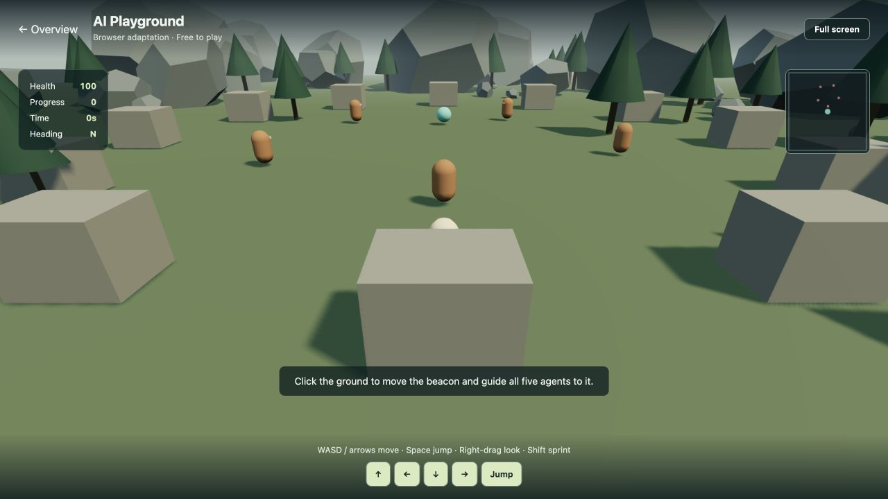

AI character systems
Agent behavior turns a rule or destination into visible movement. Observing the actors makes it possible to understand how a change in the scene affects their next action.
Unreal Engine
An Unreal Engine scene for exploring AI characters and interactive gameplay systems in a three-dimensional environment. The project brings character behavior into a level where its relationship with the surrounding space can be observed.


Agent behavior turns a rule or destination into visible movement. Observing the actors makes it possible to understand how a change in the scene affects their next action.
This part of the project contributes to the core interaction described above. Its role is presented through the project’s available interface, source, and visual preview.
This part of the project contributes to the core interaction described above. Its role is presented through the project’s available interface, source, and visual preview.
Click the ground to move the beacon and guide all five agents to it. Independent browser adaptation of the project concept, built with JavaScript and WebGL. This is not a packaged Unreal Engine build.
WASD / arrows move · Space jump · Right-drag look · Shift sprint
Project reference preview; recovered build not verified.